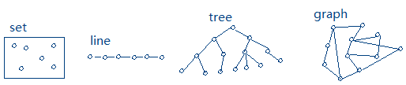
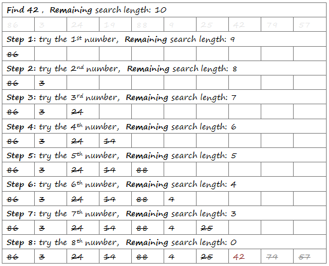
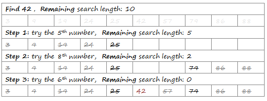
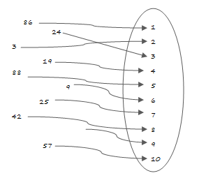
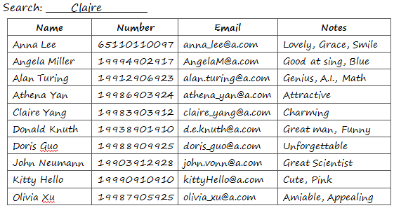

程序 = 数据结构 + 算法
通常，我们关注的对象不是孤立的，而是一组相互联系着的对象。数据结构是一组数据元素及它们之间的关系。
3.1 数据结构：集合（无连接关系），线性表（一对一顺序关系），树（一对多层次关系），图（多对多随意关系） 
“拿不准就穷举。”-- Rob Pike
简单多面体顶点数V，棱数E以及面数F之间的关系是：____
A. F-E+V = 1; B. F-E+V = 0; C. V-F+E = 2; D. V-E+F = 2
农场有牛，鸡和鱼共20只，脚共有53只，那么牛，鸡和鱼各有多少？
3个僧人和3个妖怪要从河的一边到另一边，船只能容纳两人，当僧人的数目小于妖怪时，僧人就会被吃掉，如何能够安全渡河呢？
从乱序数字中找目标，因为缺乏有用的信息，所以只能逐个试探（Heuristics）。不管从左到右逐个查找，还是从右到左逐个查找，或者随机查找，每次都只能排除一个数字，也就是待搜索区长度减1。可以预测在最坏情况下，必需遍历整个搜索区才能得到结果（找到，或者没找到），搜索次数为待搜索区长度n。比如以下的例子，从10个乱序的数字中找42，非最坏情况下，查找了8次。 
如果数字排了序呢，那么每次试探，都可以拿目标数字跟当前数字比较，确定它应该在当前数字的左端还是右端，也就意味着，除了排除当前这数字外，还可以排除掉当前这数字的整个左端或右端，简单来说就是待搜索区长度减半，这叫二分法查找。可以预测在最坏情况下，搜索次数为待搜索区长度n连续减半直到约为1的次数(((n/2)/2)/2)… = log2n。比如以下的例子，从10个排了序的数字中找42，非最坏情况下，只查找了3次。 
如果待搜索区长度为100万， 也就是有1000000个数字，最坏情况下，普通试探法需要1000000次查找，而二分法查找只需要log21000000 ≈19.93不到20次查找。还有没有效率更高的算法呢？
有一种查找效率极高数据结构，叫散列表，也叫哈希表(Hash Table)，或者字典(Dictionary)。它存放的是 关键字/值 对(key/value pair)。它通过把关键字映射到表中一个位置来访问记录，关键字与位置的映射关系叫散列函数H(key)。从关键字到位置的映射是常数级，简单来说，不管待搜索数字有多少，一旦建立好映射关系，只需查找一次。构建散列函数的方法有许多，假设我们已经为例子中的10个数字与位置建立了映射关系，那么H(42) = 8，42是第8个数字，如果H(42) = -1，代表42不存在。 
同样的道理，要查找Claire的号码，按人名排序的通讯录比乱序要高效得多，如果还以人名作为关键字建立了字典，那么不管查找谁的号码都是瞬间的事情。 